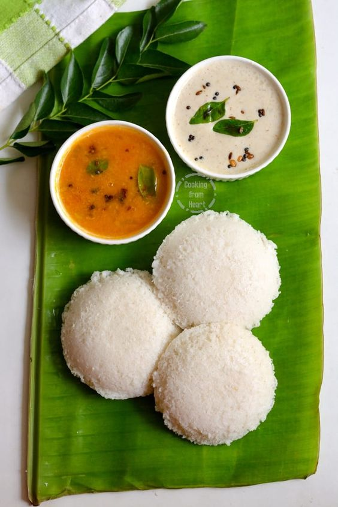
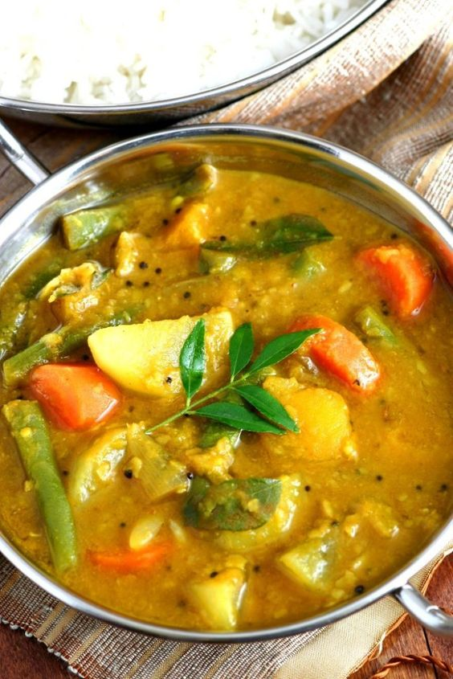
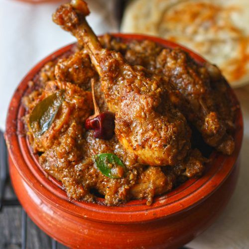

Famous Foods of Tamil Nadu
Idli

Idli Recipe:
- Ingredients:
- 1 cup urad dal (split black gram)
- 2 cups rice
- 1/2 teaspoon fenugreek seeds
- 1 teaspoon salt
- Water as needed
- Instructions:
- Soak the urad dal and fenugreek seeds in water for 4-6 hours.
- Soak the rice in water for 4-6 hours.
- Drain and grind the urad dal and fenugreek seeds into a smooth batter.
- Grind the rice into a slightly coarse batter.
- Mix both batters together, add salt, and let it ferment overnight.
- Steam the batter in idli molds for about 10-15 minutes.
- Serve hot with coconut chutney and sambar.
Sambar

Sambar Recipe:
- Ingredients:
- 1 cup toor dal (pigeon peas)
- 1 onion, chopped
- 1 tomato, chopped
- 1 cup mixed vegetables (carrots, beans, potatoes)
- 2 tablespoons sambar powder
- 1/2 teaspoon mustard seeds
- 1/2 teaspoon turmeric powder
- 1 tablespoon oil
- Salt to taste
- Chopped coriander for garnish
- Instructions:
- Cook toor dal in a pressure cooker until soft.
- Heat oil in a pan, add mustard seeds, and let them splutter.
- Add chopped onions and tomatoes, sauté until soft.
- Add mixed vegetables, turmeric powder, sambar powder, and salt. Cook until vegetables are tender.
- Add cooked dal and adjust consistency with water if needed. Simmer for a few minutes.
- Garnish with chopped coriander and serve with idli or dosa.
Chettinad Chicken

Chettinad Chicken Recipe:
- Ingredients:
- 500g chicken, cut into pieces
- 2 onions, finely chopped
- 2 tomatoes, chopped
- 2 tablespoons ginger-garlic paste
- 2 tablespoons Chettinad masala (or garam masala)
- 1/2 teaspoon turmeric powder
- 1/2 teaspoon red chili powder
- 3 tablespoons oil
- Salt to taste
- Fresh coriander for garnish
- Instructions:
- Heat oil in a pan, add chopped onions, and sauté until golden brown.
- Add ginger-garlic paste and cook until the raw smell disappears.
- Add chopped tomatoes and cook until they soften.
- Add chicken pieces, turmeric powder, red chili powder, and salt. Cook until the chicken is browned.
- Add Chettinad masala and a little water, cover, and simmer until the chicken is cooked through.
- Garnish with fresh coriander and serve with rice or naan.